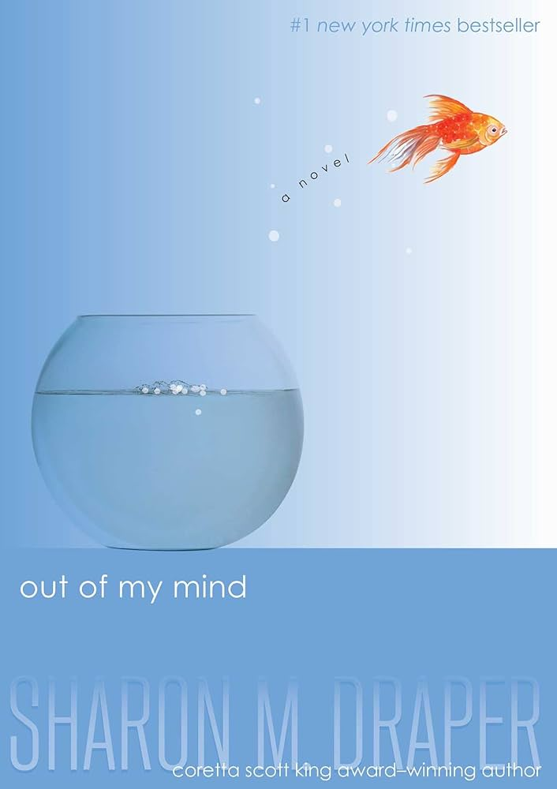

Out of My Mind by Sharon M. Draper is a powerful story exploring themes of courage, hope, and the unbreakable human spirit. This book follows Melody Brooks, an eleven year old girl with cerebral palsy who has a sharp memory and a sharper mind, as she navigates a world not built for her in a fight to be heard.
Explore the StoryOut of My Mind is a groundbreaking novel that encourages its readers to look beyond first glances and recognize the humanity and brilliance contained in every person.
This remarkable story was on the New York Times bestseller list for over three years and has impacted millions of readers with its brutally honest depiction of disability, inclusion, and the universal desire to be understood.
Out of My Mind was published in 2010, a time when awareness about disability rights and inclusion in education was growing but still faced significant challenges. The novel is set around 2002, reflecting the educational landscape of that era.
The story addresses critical issues in special education:
Draper's novel came at a crucial time when representation of disability in young adult literature was limited. The book:
The themes remain highly relevant today as schools continue to work toward true inclusion and as assistive technology continues to evolve, giving more individuals like Melody the ability to communicate and participate fully in society.
Protagonist - An eleven-year-old girl with cerebral palsy who cannot speak or walk but possesses a photographic memory and brilliant mind. She fights to prove her intelligence and find her voice.
Mother - Melody's devoted mother who works tirelessly to support her daughter, advocate for her education, and help her overcome obstacles.
Father - A loving, supportive father who works hard to provide for his family and always believes in Melody's potential.
Younger Sister - Melody's spirited little sister who is sometimes annoying but deeply loves her big sister.
Neighbor & Caregiver - Former special education teacher who becomes Melody's assistant and fierce advocate, helping her learn to communicate.
Health Aide - Melody's school aide who provides daily care and support, though their relationship is sometimes complicated.
Inclusion Teacher - Teacher of Room H-5, the special needs classroom where Melody spends her early school years.
General Education Teacher - Fifth-grade teacher who initially underestimates Melody but eventually recognizes her abilities.
Classmate - A popular girl in Melody's class who initially befriends Melody but ultimately disappoints her.
Classmate - Another student in Melody's class who shows kindness and genuine friendship.
Melody's character arc is one of the most compelling aspects of the novel. Throughout the story, she:
The novel is set in Ohio, in a contemporary American suburban community. While the specific city is not named, the setting reflects a typical middle-American town with both inclusive and segregated educational facilities.
The story takes place in the early 2000s (approximately 2002), when Melody is eleven years old and in fifth grade. This time period is significant because:
The main educational setting where Melody spends her school days. The school features:
A warm, loving environment where Melody feels safe and supported. Her home includes:
The home of Melody's neighbor and caregiver, where Melody receives additional educational support and encouragement.
Draper creates vivid sensory details throughout the settings, particularly focusing on:
Out of My Mind maintains a complex, evolving tone that shifts between several emotional registers while ultimately maintaining an undercurrent of hope and resilience.
Much of the novel carries a tone of deep frustration as readers experience Melody's inability to communicate despite her brilliant mind. Draper vividly portrays:
Despite the serious subject matter, Melody's narrative voice is often funny, sarcastic, and full of personality:
As the story progresses, the tone becomes increasingly hopeful:
The novel doesn't shy away from painful moments:
Ultimately, the tone becomes one of empowerment:
Melody's first-person narration creates an intimate, authentic tone that allows readers to:
The tone never becomes preachy or overly sentimental. Instead, Draper maintains honesty and authenticity, allowing Melody's voice to be genuine—sometimes angry, sometimes funny, always human.
Out of My Mind is told entirely from first-person point of view through the eyes and mind of eleven-year-old Melody Brooks. This narrative choice is crucial to the novel's impact and message.
The first-person perspective allows readers direct access to Melody's rich inner world:
By experiencing the story through Melody's consciousness, readers:
The first-person POV powerfully illustrates the contrast between:
While first-person narration is limited to what Melody knows and experiences, this limitation actually strengthens the novel:
The first-person POV gives Melody what she lacks in the story—a voice:
Melody is a reliable narrator whose perspective is authentic and honest:
The first-person point of view is essential to the novel's central themes:
Without the first-person perspective, the novel would lose its most powerful element: the ability to show readers that Melody is every bit as intelligent, complex, and worthy as anyone else, even when the world refuses to see it.
Eleven-year-old Melody Brooks has cerebral palsy. She cannot walk, talk, feed herself, or care for her basic needs. However, she has a photographic memory and is the smartest student in her school. The problem is, no one knows it because she has no way to communicate.
Melody has spent her entire life in a wheelchair, dependent on others for care. She attends Room H-5, the special education classroom at Spaulding Street Elementary, where she has been since kindergarten. Despite being unable to speak or control her movements, Melody absorbs everything around her—conversations, lessons, music, and the world.
For years, Melody endures the frustration of knowing answers but being unable to share them. Teachers assume she understands nothing and treat her accordingly. She is passed from grade to grade without being challenged academically.
Melody's neighbor, Mrs. Violet Valencia (Mrs. V), a former special education teacher, becomes her caregiver and advocate. Mrs. V sees Melody's intelligence and begins working with her at home, teaching her to recognize words and communicate through pointing at pictures.
When Melody is ten, Mrs. V helps her get a communication device called the Medi-Talker. This computer-like device allows Melody to press buttons with pictures and words to "speak." Initially, she can only access basic needs, but Mrs. V helps her unlock more advanced features.
Melody is finally included in general education classes for the first time in fifth grade. She takes math and language arts with regular students, though she still spends much of her day in Room H-5.
With her Medi-Talker, Melody finally has the opportunity to show her intelligence. She aces tests, participates in class discussions, and proves she is one of the smartest students in fifth grade. Her teacher, Mr. Dimming, begins to recognize her abilities.
Melody tries out for the school's academic quiz team and makes it, scoring higher than most other students. This is a major triumph—she is finally being recognized for her mind, not judged by her body.
Despite her academic success, Melody struggles socially. Rose Spencer, a popular girl, befriends Melody and invites her to be part of the quiz team's "study group." Melody feels hopeful about finally having real friends.
The quiz team qualifies for the national championship tournament. However, on the day of the competition, Rose and the other team members leave without Melody, claiming they forgot to tell her about a schedule change. They go to the tournament without her, leaving Melody devastated.
When they return, Rose offers weak excuses and shows little remorse. Melody realizes Rose never truly considered her a friend—she was just using Melody to make herself feel good about being kind to a disabled student.
Melody is heartbroken by the betrayal but refuses to give up. She realizes that while she cannot control how others treat her, she can control her own response. She continues to use her voice—her Medi-Talker—to speak up for herself and demand the respect she deserves.
Her parents and Mrs. V support her through the disappointment, reminding her of her worth and capabilities.
Though the ending is bittersweet, Melody emerges stronger. She has found her voice, both literally through her communication device and figuratively through self-advocacy. She understands that not everyone will see her for who she truly is, but that doesn't diminish her value.
Melody decides to keep moving forward, keep learning, and keep fighting to be seen and heard. The novel ends on a note of determination and hope, with Melody refusing to be defined by others' limitations or expectations.